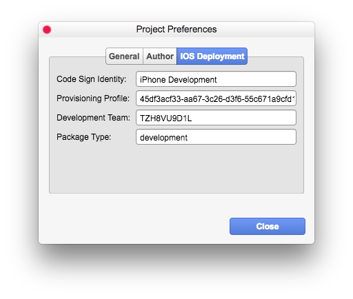

esting & Deployment for iOS 由于 iOS 平台更高的安全标准，需要一些准备步骤才能正常工作。本主题将引导你完成必要的步骤，并尽量让你一切尽可能轻松。如果你遇到困难或有任何问题，请查看我们的支持论坛。
要求要测试和/或将你的游戏部署到 iOS，你必须满足以下要求：
Apple Developer Account + iOS Developer Membership。
一台 macOS 电脑。
成为 iOS 的 Apple 开发者非常容易。你所要做的就是访问 Apple Developer 网站，即
http://developer.apple.com
并注册一个帐户，或者直接使用你已有的 Apple ID。登录后，按照网站上的说明加入 iOS Developer Program，费用为每年 99 美元。 在下一步中，你必须创建一个 provisioning profile，将你的设备注册为开发者设备，然后下载并安装 provisioning profile 到你的计算机上。 只需遵循开发者网站上的指南进行设置。安装 Xcode 开发工具
你需要 Xcode 开发工具来构建和部署你的 iOS 游戏。 只需登录 Apple Developer Portal，然后查看下载部分，通常是：
https://developer.apple.com/download/more/
安装 Node.js你需要 Node.js 来运行 Cordova，Cordova 是正确打包你的 iOS 部署游戏所必需的。 你可以从以下网址下载 Node.js：
http://nodejs.org
打开终端后，你会看到一个黑色窗口，其中有一个闪烁的光标，你可以在其中输入一些文本（命令）。 只需键入以下命令：
npm install -g cordova
然后按回车键。 之后，终端窗口将显示大量文本。 只需等待所有操作完成。 然后键入：
cordova --version
然后按回车键。 如果你看到 cordova 的版本号，则安装成功。 如果出现错误，则说明有些地方出错了。 在这种情况下，请查看终端窗口中的文本/消息，并在我们的论坛中寻求帮助。
准备你的 VN Maker 项目以进行 iOS 部署
既然一切都已设置好，你就可以开始为 iOS 构建你的游戏了！ 确保你的项目在 Database > System 中有一个
游戏标题
。音频和视频资源在撰写本文时，iOS 只支持 .m4a/.mp4/.mp3/.aac/.wav 音频格式和 .mp4 视频格式。 如果你使用了其他格式，如 .ogg 或 .webm，请确保将所有音频和视频文件转换为必要的格式。 VN Maker 允许你多次导入同一个文件，但使用不同的格式，然后在运行时自动选择正确的格式，这对于 HTML5 网页浏览器游戏很有用。 但是，如果你计划离线通过 App Store 发布你的游戏，则应删除任何 .ogg 或 .webm 文件以减小文件大小。
对于视频文件，由于技术限制，视频播放仅支持 iOS 10+。
项目偏好设置
你需要做的最后一步是打开
项目偏好设置
并导航到 iOS 部署选项卡。（显示的 provisioning profile 和 development team 并非真实 random，仅为提供示例说明你需要输入什么样的数据）。要获取 provisioning profile，最简单的方法是使用 TextEdit 等文本编辑器打开你下载的 provisioning profile 文件 (.mobileprovision)，然后查找 UUID 和一个长十六进制数字，如上面屏幕截图所示。

你也可以在 provisioning profile 文件中找到 Development Team Identifier。 只需查找 com.apple.developer.team-identifier。 另外，请确保在
General
选项卡中输入一个唯一的Game ID。输入所有必需的信息后，单击“关闭”按钮并保存你的项目。在 iOS 上进行测试
如果你想在 iOS 上进行快速试玩，只需将设备连接到你的计算机，并确保它保持解锁/激活状态。
然后从菜单栏选择“构建为 > iOS (Cordova)”来构建你的 iOS 游戏。 构建过程将需要几分钟时间。 构建过程完成后，通过“工具 > 调试控制台”打开调试控制台，并检查任何错误。 查找状态消息，如“**ARCHIVE_SUCCEEDED**”或“**EXPORT_SUCCEEDED**”，以确保构建过程没有错误。
如果你想手动安装，可以在项目的 build-folder 中找到
.ipa
文件：<project-folder>/build/<project-name>/<project-name>/platforms/ios/build/device/<project-name>.ipa现在，你可以通过从菜单栏选择“在...上播放 > iOS (Cordova)”来在已连接的设备上播放你的游戏。 你的游戏构建将被传输并安装到已连接的设备上，然后会自动启动。 检查调试控制台以获取任何错误。
部署到 iOS
你可以使用
创建游戏包
向导来部署你的 iOS 游戏。 只需从平台列表中选择“iOS (Cordova)”。 打开调试控制台以检查错误。 包创建可能需要一段时间。 你可以在以下位置找到 .ipa 文件：
<output-location>/<project-name>/<project-name>/platforms/ios/build/device/<project-name>.ipa。有关如何将你的应用程序提交到 App Store 的更多信息，请遵循 Apple Developer 网站上的指南。故障排除
如果你没有遇到任何错误地完成了以上所有步骤，那么恭喜你！ 但这并不是常规情况，尤其不是你第一次这样做的时候。 因此，如果你遇到困难或收到任何错误消息，请不要担心，因为它们通常与错误的配置有关，并且可以轻松解决。
你应该尝试做的第一件事是通过检查错误日志来弄清楚错误消息。 有时错误消息即使对非程序员来说也是可以理解的。 常见错误包括：
你的设备未在 provisioning profile 中注册
你的设备未连接或处于锁定屏幕状态
provisioning profile 和 team identifier 不匹配
适用于 PC / Mac